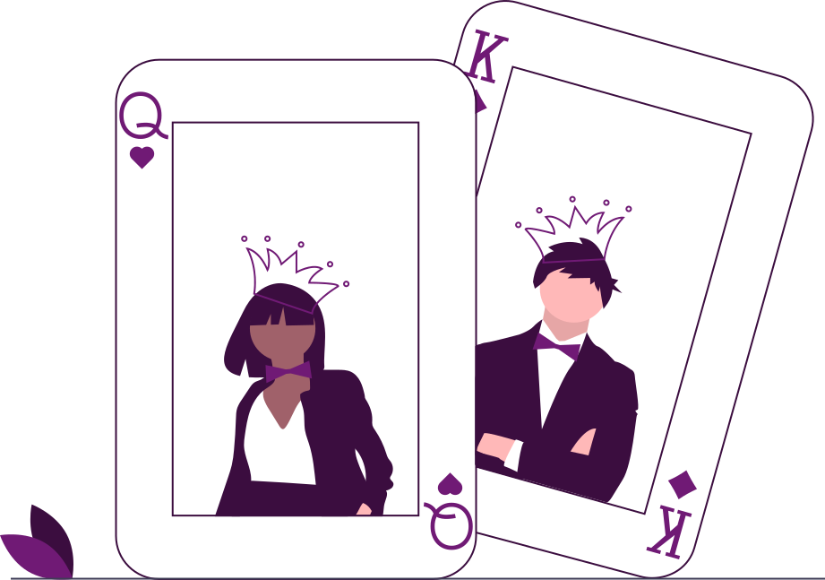
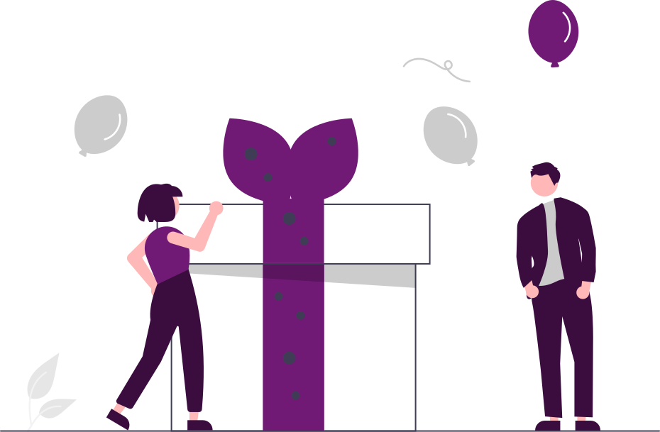

免費轉最容易搞錯嘅三件事
- 唔使加注免費轉期間唔會再扣你嘅餘額，每一轉都用觸發嗰陣嘅注額計。
- 注額鎖死用細注觸發，成段免費轉都係細注。唔會因為變成「免費」就自動調高。
- 可以再觸發部分機台喺免費轉入面再夾夠符號，會再送多幾轉。

「免費」唔等於「多咗錢」
免費轉慳返嘅係注額，唔係保證有賠付。十轉打完一無所獲係正常結果，唔係機台出錯。
三個分得清楚嘅概念


觸發條件
夾夠符號就會入
觸發免費轉靠嘅係 Scatter 呢類特殊符號，同一般連線唔同——佢唔使排喺線上面，畫面出夠數量就算。所以就算你關咗大部分嘅線，Scatter 一樣照計。
3最常見嘅門檻係三個。部分機台四個起跳，送嘅轉數亦都會多啲。
睇觸發點計 →

再觸發
入咗之後仲可以加轉
免費轉入面再夾夠觸發符號，部分機台會再送多一批，呢個叫再觸發。有啲機台冇上限，有啲寫明最多加到幾多轉——寫喺獎金表嘅細節嗰段。
＋5常見嘅加轉幅度，同第一次觸發送嘅數量未必一樣。
睇再觸發 →四個數字
 3
3
多數機台要夾夠三個 Scatter 先觸發。
 10
10
常見嘅免費轉次數由十轉起跳。
 2
2
Wild 同 Scatter 係兩種唔同嘅特殊符號。
 1
1
獎金表最後嗰頁，通常就係規則細節。
睇完先入去試
呢度唔會叫你玩邊台。免費轉點運作講清楚咗，玩唔玩、玩幾耐，係你自己嘅決定。
入遊戲大廳